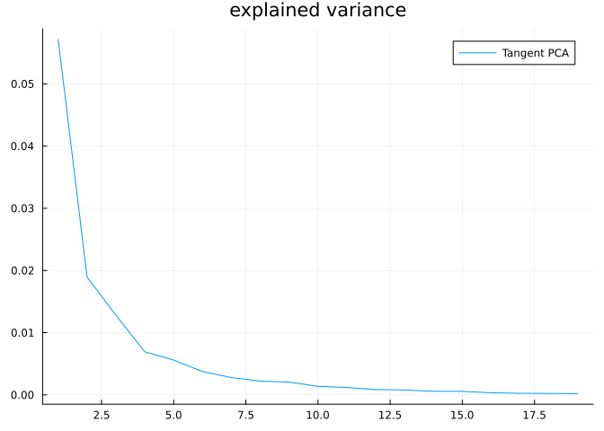

Hand gesture analysis
In this tutorial we will learn how to use Kendall’s shape space to analyze hand gesture data.
Let’s start by loading libraries required for our work.
using Manifolds, CSV, DataFrames, Plots, MultivariateStatsOur first function loads dataset of hand gestures, described here.
function load_hands()
hands_url = "https://raw.githubusercontent.com/geomstats/geomstats/master/geomstats/datasets/data/hands/hands.txt"
hand_labels_url = "https://raw.githubusercontent.com/geomstats/geomstats/master/geomstats/datasets/data/hands/labels.txt"
hands = Matrix(CSV.read(download(hands_url), DataFrame, header=false))
hands = reshape(hands, size(hands, 1), 3, 22)
hand_labels = CSV.read(download(hand_labels_url), DataFrame, header=false).Column1
return hands, hand_labels
endload_hands (generic function with 1 method)The following code plots a sample gesture as a 3D scatter plot of points.
hands, hand_labels = load_hands()
scatter3d(hands[1, 1, :], hands[1, 2, :], hands[1, 3, :])Each gesture is represented by 22 landmarks in $ℝ³$, so we use the appropriate Kendall’s shape space
Mshape = KendallsShapeSpace(3, 22)KendallsShapeSpace(3, 22)Hands read from the dataset are projected to the shape space to remove translation and scaling variability. Rotational variability is then handled using the quotient structure of KendallsShapeSpace
hands_projected = [project(Mshape, hands[i, :, :]) for i in axes(hands, 1)]In the next part let’s do tangent space PCA. This starts with computing a mean point and computing logithmic maps at mean to each point in the dataset.
mean_hand = mean(Mshape, hands_projected)
hand_logs = [log(Mshape, mean_hand, p) for p in hands_projected]For a tangent PCA, we need coordinates in a basis. Some libraries skip this step because the representation of tangent vectors forms a linear subspace of an Euclidean space so PCA automatically detects which directions have no variance but this is a more generic way to solve this issue.
B = get_basis(Mshape, mean_hand, ProjectedOrthonormalBasis(:svd))
hand_log_coordinates = [get_coordinates(Mshape, mean_hand, X, B) for X in hand_logs]This code prepares data for MultivariateStats – mean=0 is set because we’ve centered the data geometrically to mean_hand in the code above.
red_coords = reduce(hcat, hand_log_coordinates)
fp = fit(PCA, red_coords; mean=0)PCA(indim = 59, outdim = 19, principalratio = 0.991345477862632)
Pattern matrix (unstandardized loadings):
────────────────────────────────────────────────────────────────────────────────────────────────────────────────────────────────────────────────────────────────────────────────────────────────────────────────────────────────────────────────────────────────────────────
PC1 PC2 PC3 PC4 PC5 PC6 PC7 PC8 PC9 PC10 PC11 PC12 PC13 PC14 PC15 PC16 PC17 PC18 PC19
────────────────────────────────────────────────────────────────────────────────────────────────────────────────────────────────────────────────────────────────────────────────────────────────────────────────────────────────────────────────────────────────────────────
1 0.0225725 -0.025823 0.00247119 -0.00194504 0.011187 0.00865122 -0.00432 0.00232697 -0.00133113 -0.00603743 0.00279173 0.00459607 0.0026104 -0.00194346 -0.0010809 0.00371279 -0.0026941 -0.00336716 -4.78115e-6
2 -0.0298018 0.012855 -0.0253788 -0.0107526 -0.000642301 0.00243343 -0.0129186 0.0117729 0.0159723 0.00107763 -0.00131555 0.00285026 0.00463989 -0.00216125 0.00161956 0.00105094 0.00029935 -0.000818863 0.000226847
3 -0.00496432 -0.0149723 -0.00377204 0.0160204 -0.0052388 0.00212934 -0.00568703 -0.00338036 0.000889778 -0.00214546 -0.000896225 -0.00137907 -0.00247179 0.00239153 -0.000377108 -0.00215105 0.0027909 0.000117751 -0.00127213
4 0.0056335 -0.0129395 0.00752466 0.00555847 -0.00280322 0.00782194 0.00111858 0.0085054 -0.00273334 -0.00581609 0.00450121 -0.00038663 0.00167242 0.00231527 0.000307966 -0.00131181 0.000720744 0.00111114 0.00361935
5 -0.0113838 0.0232298 -0.00547126 -0.0179074 -0.00225183 -0.0123001 -0.00379069 0.00375553 -0.0110292 0.00304722 -0.00459228 -0.00477702 -0.000442113 0.00166295 0.00238507 0.00489784 -0.00261756 0.00101093 -0.00178457
6 -0.0345859 -0.0233477 0.0296546 0.00689836 0.003326 -0.00135883 -0.0119614 0.00329535 -0.00698649 -0.00493814 0.00376636 0.000613432 -0.00149234 -0.000250127 0.00623361 0.00254364 -0.000999917 9.66511e-6 -0.000225613
7 -0.0374342 -0.0209963 0.00235653 0.000683237 0.00758501 -0.00999398 0.00657121 0.00782893 -0.00406903 -0.00581627 -0.00079722 0.0041202 0.00319899 0.00585783 -0.00167581 0.0030249 0.00322473 -0.00108314 -0.00116042
8 0.02496 0.00943876 0.011668 -0.00772333 0.00960598 -0.00142074 0.00211964 -0.000840499 -0.000234754 -0.000749657 0.000307986 0.0066857 -0.000133384 0.00300887 0.0022704 0.00120301 0.00203841 0.000966472 0.00120561
9 0.0296003 0.0472131 0.00210213 -0.00393545 -0.00142636 -0.00236192 -0.00533011 -0.00345383 -0.00439341 -0.00852948 -0.000396924 -0.000150678 0.00330386 0.00089967 0.00388721 -0.00199243 -0.00161544 0.00329972 -0.00160867
10 0.0187554 0.00337061 0.0254247 0.00182716 -0.00726025 0.00345359 0.0118753 0.00392614 -0.00737372 -0.000261283 -0.0044591 0.000623762 -0.00123177 -0.00187434 0.00347221 0.00122414 0.00162647 0.000179093 -0.000639519
11 -0.0276189 -0.000868697 0.00124921 -0.0271846 -0.0182645 -0.00654734 -0.00377689 -0.00309552 0.00263585 0.0083263 0.0117277 -0.000277824 -0.0013572 -0.00171603 -0.00248708 0.0002054 -0.00129968 0.000538015 0.000635364
12 0.0742252 -0.0111949 -0.00393113 -0.00375025 -0.00466852 0.00718482 -0.00421926 -0.000133097 -0.00285935 0.00220137 -0.0063239 0.00591546 -0.00391862 -0.00220676 -0.000179801 0.00446115 -0.000848733 -0.00206532 0.00226783
13 0.0426582 0.00910716 0.0199886 0.00477317 0.000139353 0.00719425 -0.0105414 -0.00511285 -0.00217195 0.0106759 -0.000717452 0.00304458 -0.00227829 0.00118983 0.00302885 0.00259039 0.000590182 -0.00113679 -0.0014884
14 0.0473028 0.00651493 0.00140138 0.00225381 0.00439764 -0.00750531 0.0193882 -0.00406276 0.0131133 -0.00935677 0.00405362 -0.00109819 -0.000160323 0.00193398 0.00109956 0.000814692 0.000914761 0.00198064 0.00125932
15 0.0332915 0.0221761 0.0200686 -0.000418236 -0.00238077 0.0136492 -0.00572773 -0.00525892 0.00565712 -0.00186374 0.00193716 -0.00251317 0.00147158 -0.00144082 -0.0036298 0.00233316 -0.000552749 -0.00117945 -0.00143965
16 -0.019766 -0.0126687 -0.0327939 -0.00786485 0.00374512 0.00537198 -0.0105409 -0.0120939 -4.87631e-5 -0.000200912 0.00649485 0.00341607 0.00856351 -0.000627434 0.00512775 0.00157364 0.0025359 -0.000340485 0.00302362
17 -0.0163038 0.00392205 0.00368172 -0.00108868 -0.00403097 -0.00250602 -0.00154047 -0.0091664 0.012208 -0.00212529 -0.00249079 0.00425261 -0.0009888 0.000699026 0.00159838 0.00182519 -0.00268461 0.0024567 -0.00287173
18 0.0315265 0.014339 -0.0281659 0.0188983 0.00116313 0.00517276 -0.012306 0.00964101 0.00378792 0.003776 -0.00471276 -0.00276278 0.00073812 -0.0018049 -0.00110501 -0.00142815 -0.00324852 0.00125496 0.00036833
19 -0.01342 -0.0266179 0.00692541 -0.00394567 0.00696648 0.00546101 0.0107503 0.00161672 0.00243154 0.0111542 -0.00859616 -0.0022637 -0.00125188 -0.00218111 0.00418941 -0.00245702 0.00109089 0.00262105 0.000894704
20 -0.000739408 0.00263129 0.00124919 0.000518372 -0.00405283 -0.00980204 -0.00494474 -0.00280603 -0.00543177 -0.00590718 0.00579551 0.00110744 -0.00812888 0.00441085 -0.00391783 0.00174295 -0.000252033 -0.00209523 0.00204457
21 0.0504932 -0.0110797 -0.0026189 -0.00962761 -0.0153567 -0.00273023 0.00361822 0.00201177 -0.00445139 -0.000379839 0.00688118 -0.000391294 -0.000934333 -0.00118075 -0.00270666 -0.000350291 0.000905076 0.00117337 -0.000755983
22 -0.046736 0.00232599 -0.0170992 -0.00282647 -0.014517 0.00487345 0.00150701 -0.00101275 -0.00475473 0.00292961 0.00419816 0.0025307 0.00131901 0.00431956 -0.00200533 -0.00153549 -0.000850689 -0.000199973 -0.000797035
23 -0.0173763 -0.0135675 -0.0235186 -0.00469928 -0.010083 0.00622843 0.00612574 0.000719204 -0.00473516 -0.00170497 -0.0088133 -0.00339875 0.0030805 0.00313125 -0.00334306 0.00617814 0.00103001 0.00544743 0.000548909
24 -0.00826661 0.0167308 0.00865901 -0.00214922 0.0150335 0.00823526 -0.000297993 -0.00237168 -0.000986393 0.00220198 -0.000681713 -0.000197612 0.000283165 0.00363122 0.000841859 -0.000161184 -0.00456144 0.000377615 0.000890576
25 -0.00644559 0.010877 0.00278186 -0.00911345 -0.0107489 0.0243946 0.00709473 0.0105892 -0.00627612 -0.00400938 0.00573931 -0.000879342 -0.00421579 -0.00280443 0.00183861 -0.00101372 0.00165889 -0.00303974 0.0016519
26 0.0441278 0.0158065 -0.00400205 -0.000325081 0.00203837 0.0080049 0.00759341 0.00350391 -0.00106124 0.000470616 0.000231166 0.000781562 0.000640405 0.00106251 -0.00165851 0.0036525 0.00222514 -0.00223304 -0.00322942
27 -0.0185767 0.0125668 0.0141537 0.0144925 0.00211121 -0.0084411 -0.00693538 0.00588689 0.00509395 -0.000498211 -8.28981e-5 -0.00196856 0.000165433 0.00150428 0.00217742 0.00406355 0.00266332 0.000538881 0.000787166
28 -0.0288949 0.0285503 -0.00938241 0.00314241 0.00451199 -0.000322886 0.0102419 -0.0057291 0.00452652 -0.00434567 0.00333208 0.000768434 0.000697567 -0.000947317 0.00197396 0.00231527 -0.00262045 -0.0052142 -0.0022789
29 0.054652 0.016176 0.0233463 -0.00263117 0.0140462 -0.00251733 0.00410277 0.00636276 0.00827887 0.00558304 0.00735049 0.00273341 0.00209918 -0.00136746 -0.00493028 0.0020373 0.00130772 0.00142239 -0.00115467
30 -0.0234619 0.0175726 0.0109159 0.0120296 -0.00457707 -0.0145693 -7.70199e-5 -0.00427574 -0.00308155 0.0048407 -0.000529341 -0.00208163 -0.00219104 -0.00363319 -0.00608362 0.00641312 7.09267e-5 0.00118223 0.00326152
31 -0.00743661 -0.0210373 -0.0126597 -0.00541652 0.00933005 0.00815691 0.00468841 0.00631952 0.0111953 0.00090758 0.000217408 -0.0062275 -0.00622832 0.000955856 0.00072591 0.00169066 -0.00115975 -0.00147563 -0.00250162
32 0.00942946 0.0348065 -0.00344763 0.00870651 -0.0074523 -0.00813785 0.00974278 0.00503949 -0.0115295 0.00778616 0.00187608 -6.06739e-5 0.0101328 -0.00379749 0.00144605 -0.000102658 -0.00132698 -0.00276075 0.00106114
33 0.0632112 -0.0391171 -0.00200189 -0.0220903 -0.0144734 -0.0113132 0.0077086 -0.000969037 0.00503636 0.00706564 0.00437077 0.00130097 0.00340908 0.0051326 0.00253346 0.000507903 -0.000707207 -0.00056295 -0.00194977
34 0.0207818 -0.0135932 0.000771381 0.0036835 0.0213596 -0.00486239 0.00157098 -0.00771602 -0.00359822 -0.00378203 -0.0016533 -0.0110685 -0.000753667 -0.00229644 -0.00150167 -0.000303523 0.00158846 -0.000607838 0.000615078
35 -0.000379201 -0.0120639 0.0297885 -0.00270901 0.00650958 -0.000380978 -0.00121355 0.0101664 -0.00517949 -0.000558258 0.00197674 0.000277632 0.00797185 -0.000760715 -0.00264005 -0.00348748 -0.00231271 0.00137201 0.0015573
36 0.00115252 0.000667601 -0.000336516 0.0137512 -0.00182112 0.000312716 0.0107091 -0.0131901 -0.000686853 0.00429926 -0.00405865 -0.00152666 0.00779814 0.00289293 0.000712759 -0.00290687 0.000187923 -0.00341138 -0.00143035
37 -0.0710484 -0.0120054 -0.00742916 0.0315282 0.000899437 0.00447448 0.00873192 -0.00168979 0.00408006 0.0081241 0.0111211 -0.00380385 -0.0027588 0.000382961 0.000901206 0.00209142 -0.00297548 0.000369737 0.000194095
38 0.0173624 -0.00401998 0.00476487 -0.000229019 0.00277068 0.0121718 -0.00471613 -0.00762391 0.00490114 6.67001e-5 -0.00184396 0.00294105 0.00142187 0.00170863 0.00048986 -0.000522409 0.00089876 0.00154977 -0.00243131
39 -0.0132061 0.0340923 -0.00256571 -0.00165163 -0.0056104 -0.00854407 -0.00256856 0.00640797 0.00421851 0.00576642 -0.00326446 0.00247372 -0.00086705 -0.003962 0.00141905 -0.000994299 0.00542489 0.000229981 -0.00130346
40 0.0201995 0.00167282 -0.015568 0.000124091 0.00826228 0.00495587 0.0025755 0.0135085 0.0068398 -0.00135169 -0.000719346 -0.000414134 0.00126898 -0.00109902 -0.00309125 0.00299976 -0.00179919 0.000209681 0.00138728
41 0.0311951 -0.00349583 -0.000650444 0.00225274 -0.0202231 0.00133542 0.000267878 -0.00500205 0.00441379 4.99341e-6 -0.00226762 -0.00423897 -0.00153824 -0.00378025 -0.00351691 -0.000162936 -0.0024964 0.000454088 0.000183778
42 0.00295307 -0.00780823 0.00723101 0.0102236 -0.00344839 0.0073579 -0.00253667 -0.00139851 -0.00143191 0.00254803 0.00531096 0.00456018 -0.00235568 -0.00376306 -0.00340022 -0.00172833 0.00121904 0.00142326 -0.000685875
43 0.0194641 -0.0113322 -0.00277425 0.00886678 0.010623 -0.0172909 -0.00366068 0.00715197 0.00562361 0.00432699 0.00736201 0.00317588 -0.00247544 -0.00147035 0.00388555 -0.00220526 0.00103274 0.00163166 0.000317339
44 -0.0404226 -0.0150374 0.0122555 -0.00944404 0.0105142 0.000430679 -0.00492254 -0.0094228 0.0056596 0.000305474 -0.00401212 0.00405241 0.00754805 -0.0016228 -0.00720144 0.000628635 0.00159903 -0.00156151 0.00249425
45 0.019093 0.0161417 -0.0106445 0.00289789 -0.00179217 -0.00983076 0.00218895 0.00481717 0.0085834 -0.00607766 0.000501381 -0.00255306 -0.000130565 0.00217908 0.00346562 -0.000368367 0.00076262 -0.000891547 0.00282931
46 0.0260759 0.00663921 -0.0162865 -0.000305536 0.011383 -0.00196883 -0.00363319 -0.0036993 -0.00455917 -0.00290846 0.00888095 -0.00789423 0.00304331 -0.00740744 0.00050636 -0.000302411 0.0030843 0.00049445 -0.00284163
47 -0.0221746 -0.0199404 0.000534764 0.00477627 0.0141621 0.000433482 0.000167613 0.00463961 -0.00399233 0.00393828 -0.000758662 -0.00181117 0.00373518 -0.00279076 -0.000500963 0.00307397 0.0025922 -0.00118273 -0.00313347
48 -0.0550543 0.0363964 -0.00742737 0.00509457 0.00478327 0.00596863 0.0123141 0.00319395 0.00032336 0.00227062 0.00182639 0.0089813 -0.00131728 0.00282792 -0.00285173 0.000575806 0.000630176 0.00142055 -0.000739086
49 0.00913939 -0.0112506 0.00275407 -0.000108444 0.0175965 -0.00720219 0.0028736 -0.00852751 -0.00367575 0.00224067 0.00306352 0.00371249 -0.0013583 -0.00438014 0.00156735 0.00259369 -0.00342623 0.00252017 -0.000817948
50 -0.00233578 -0.0202756 0.0265616 0.0127293 -0.0118266 0.00893602 0.00197975 0.00795907 0.00501867 0.00222461 0.00222965 -0.00193209 0.00671279 0.000512806 -0.000123589 0.00127378 -0.00139443 0.001997 -0.0018316
51 -0.0153559 -0.0100082 0.0139632 0.00493122 -0.0222626 0.000493596 0.00833022 -0.0038709 0.00743823 -0.00699599 -0.0016895 0.00127742 0.00430974 -0.00836289 0.00714681 0.00356698 -0.000744286 0.000825278 0.00269039
52 0.0263224 -0.017408 -0.0229181 -0.00281498 0.00866802 -0.0019128 0.00195427 0.00439744 -0.00584011 0.00819845 0.000279562 0.000429365 -0.000174549 0.00240462 0.00358596 0.00083813 -0.00110688 -0.000486164 0.00155618
53 0.0340365 0.0249426 -0.000528411 0.00975803 0.0137844 0.0129551 0.00420257 -0.00700206 -0.00177581 0.00589381 0.00212311 0.00317137 -0.00186415 0.00236349 0.00271734 -0.000199331 0.000225671 0.00280694 0.00416741
54 -0.0117798 0.00903529 0.0387701 0.00454727 -0.00907697 -0.00488634 -0.00773384 -6.19644e-6 0.0089247 0.00618783 -0.00347535 -0.00495008 -0.000644665 0.00498122 0.00158708 -0.000299986 0.00137401 -0.00415685 0.00151692
55 0.040961 -0.0047418 -0.00467653 0.0299573 -0.010076 -0.00532661 -0.00871529 0.0040513 -0.00358455 -0.00462993 0.00250156 0.00223835 0.0054579 0.00519887 -0.000305873 0.000448611 -0.00211423 0.00125517 -0.00247527
56 0.0102925 0.013984 0.000812639 -0.00373706 -0.00349584 0.0124504 -0.00441857 -0.0044716 0.00140511 0.00328495 0.00684282 -0.00884618 0.0042292 0.00577289 -0.00200728 0.00248224 0.00354552 0.00261187 0.00147238
57 0.0477407 1.14678e-5 -0.00662024 0.00219729 0.00430952 -0.00449388 0.00119093 0.000191644 0.00325373 0.00379379 -0.000464058 -0.00390622 0.00283012 0.00361447 -0.000321092 0.000398221 -0.00180963 -0.00322221 0.00339463
58 0.0399973 -0.0189741 -0.0247896 0.0297376 -0.013145 -0.00537322 0.000798352 -0.00376624 -0.00048942 0.0013669 -0.00261489 0.00622029 -0.00186308 -0.00227817 -0.00329716 6.72505e-6 0.00269157 -0.00133317 0.000372921
59 -0.00330724 0.000903053 0.00809613 -0.00496936 0.00629712 -0.00809498 0.00396068 0.0024341 0.00266899 -0.00182288 -0.00357433 0.00138473 0.00143361 -0.00171682 -0.00717317 -0.00423229 -0.00252162 0.00019209 0.000617265
────────────────────────────────────────────────────────────────────────────────────────────────────────────────────────────────────────────────────────────────────────────────────────────────────────────────────────────────────────────────────────────────────────────
Importance of components:
─────────────────────────────────────────────────────────────────────────────────────────────────────────────────────────────────────────────────────────────────────────────────────────────────────────────────────────────────────────────────────────────────
PC1 PC2 PC3 PC4 PC5 PC6 PC7 PC8 PC9 PC10 PC11 PC12 PC13 PC14 PC15 PC16 PC17 PC18 PC19
─────────────────────────────────────────────────────────────────────────────────────────────────────────────────────────────────────────────────────────────────────────────────────────────────────────────────────────────────────────────────────────────────
SS Loadings (Eigenvalues) 0.0571665 0.0189413 0.0127985 0.00692343 0.00559569 0.00374975 0.00277789 0.00221675 0.00204783 0.00136863 0.00118197 0.000853869 0.000786129 0.000575358 0.000561562 0.000342726 0.000253164 0.000229252 0.00020354
Variance explained 0.477945 0.15836 0.107003 0.0578838 0.0467831 0.0313501 0.0232248 0.0185333 0.017121 0.0114425 0.00988197 0.00713883 0.00657249 0.00481032 0.00469498 0.00286538 0.00211659 0.00191668 0.00170171
Cumulative variance 0.477945 0.636305 0.743308 0.801192 0.847975 0.879325 0.90255 0.921083 0.938204 0.949647 0.959528 0.966667 0.97324 0.97805 0.982745 0.98561 0.987727 0.989644 0.991345
Proportion explained 0.482117 0.159743 0.107937 0.0583891 0.0471916 0.0316238 0.0234275 0.0186951 0.0172705 0.0115424 0.00996824 0.00720116 0.00662987 0.00485231 0.00473597 0.0028904 0.00213507 0.00193341 0.00171657
Cumulative proportion 0.482117 0.64186 0.749797 0.808186 0.855378 0.887002 0.910429 0.929124 0.946395 0.957937 0.967905 0.975106 0.981736 0.986589 0.991325 0.994215 0.99635 0.998283 1.0
─────────────────────────────────────────────────────────────────────────────────────────────────────────────────────────────────────────────────────────────────────────────────────────────────────────────────────────────────────────────────────────────────Now let’s show explained variance of each principal component.
plot(principalvars(fp), title="explained variance", label="Tangent PCA")
The next plot shows how projections on the first two principal components look like.
fig = plot(; title="coordinates per gesture of the first two principal components")
for label_num in [0, 1]
mask = hand_labels .== label_num
cur_hand_logs = red_coords[:, mask]
cur_t = MultivariateStats.transform(fp, cur_hand_logs)
scatter!(fig, cur_t[1, :], cur_t[2, :], label="gesture " * string(label_num))
end
xlabel!(fig, "principal component 1")
ylabel!(fig, "principal component 2")
figThe following heatmap displays pairwise distances between gestures. We can use them for clustering, classification, etc.
hand_distances = [
distance(Mshape, hands_projected[i], hands_projected[j]) for
i in eachindex(hands_projected), j in eachindex(hands_projected)
]
heatmap(hand_distances, aspect_ratio=:equal)